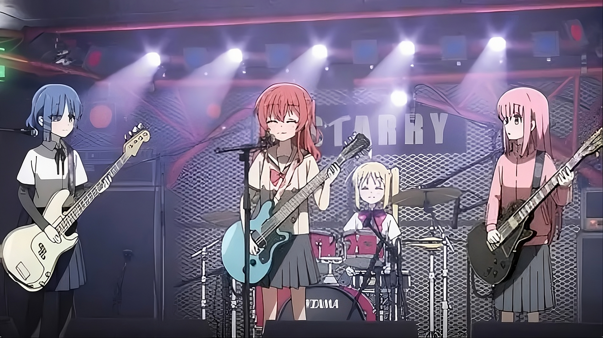

Story
Hitori Gotoh is determined to conquer stage fright and build a band after being inspired by her favorite musician.
Anime portfolio celebrating Hitori Gotoh and her bandmates.
Bocchi the Rock Portfolio
A fan portfolio featuring the story, characters, songs, and visuals from the anime.
Meet the Band“Bocchi the Rock!” is a music anime about Hitori Gotoh, a shy guitarist who dreams of becoming a rock star and makes new friends through music.
Hitori Gotoh is determined to conquer stage fright and build a band after being inspired by her favorite musician.
The series blends comedy, slice-of-life, and music with expressive character animation and emotional growth.
Bright, energetic, and heartfelt — this portfolio emphasizes the series’ charm and musical passion.
The members of Kessoku Band each bring a unique personality and musical talent.
Also known as Bocchi, she is the nervous guitarist with a huge dream of being in a band.
The upbeat drummer who recruits Bocchi and helps her step onto the stage.
A cool but kind bassist who supports the band with solid rhythm and calm energy.
The talented keyboardist with a charismatic presence and sharp musical skill.
The band formed in the show that becomes Bocchi’s source of friendship, courage, and music.
Iconic tracks from the anime that capture the emotional highs and performance energy.
The opening theme with catchy guitar riffs and a youthful rock spirit.
A powerful song that reflects Bocchi’s struggles with anxiety and her drive to connect with others.
Emotional music perfect for the series’ more introspective moments and character growth.
Visual inspiration for your Bocchi the Rock portfolio design.

Bocchi on stage

Band rehearsal mood

Electric guitar focus